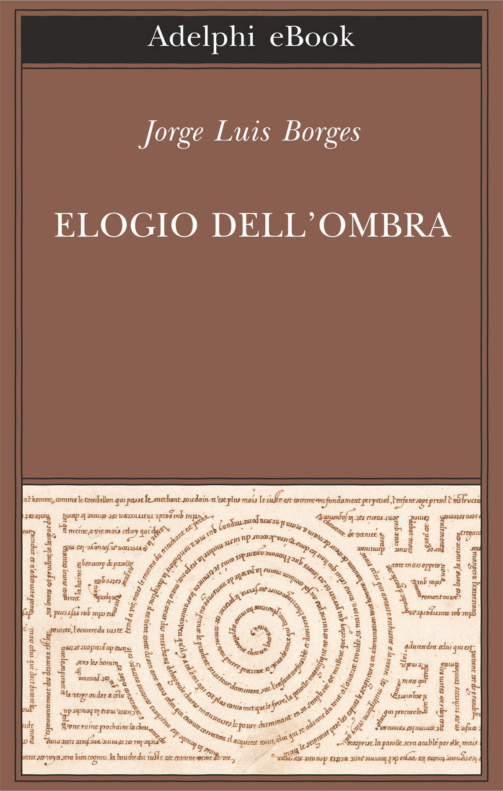
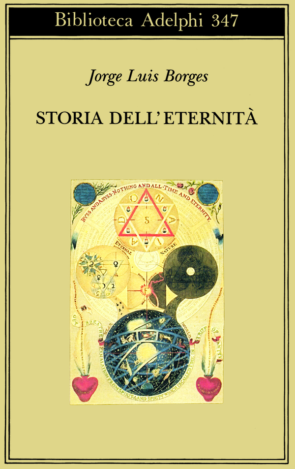

59:13 · 11 OPERE
La parte da cui stare.
Il filo del discorso
Dr Divago parte dalla necessità di parlare soltanto quando il discorso aggiunge qualcosa alla comprensione. La critica della comunicazione e dell’uso dell’IA introduce la responsabilità della scelta: delegare, ripetere e schierarsi possono diventare modi di sottrarsi al giudizio. Il percorso passa dalla mortalità e dalla memoria delle generazioni al racconto di Borges su Caino e Abele, per ricondurre il valore dell’azione al momento vissuto. Nella seconda parte il relatore insiste sul peso storico delle idee e sull’esigenza di discuterne il contenuto, senza ridurle al prestigio di una scuola o all’appartenenza politica. Schopenhauer, il Manifesto di Marx ed Engels e Shakespeare accompagnano la polemica contro una lettura del mondo divisa in campi obbligati. Testimonianza, trasformazioni urbane e costumi diventano esempi della sua interpretazione della modernità. Bartleby suggerisce una possibilità di sottrazione; la conclusione collega l’indipendenza del giudizio al senso cristiano della gratuità. Le valutazioni sull’IA, sulla pandemia e sul conformismo restano posizioni del relatore, distinte dalle verifiche dei riferimenti e dalle affermazioni fattuali.
I libri nel discorso

La Repubblica
Identificazione probabile
Copertina: Laterza · La Repubblica · edizione con testo a fronte di riferimento
Immagine associata all’ISBN di riferimento e controllata visivamente; edizione e traduzione non identificate come quelle citate o lette nel video.
Anello di Gige, trascrizione automatica Gigi: rimando al libro II della Repubblica, titolo non pronunciato.
Passaggio 12:48 ↗ · Fonti e libro ↗
Iliade
Identificazione probabile
Copertina: Einaudi · ET Classici · 2014
Copertina autentica dell’edizione di riferimento, controllata visivamente. Non identifica l’esemplare letto o citato nel video.
Omero e la caducità delle foglie: rimando probabile alla similitudine delle generazioni, Iliade VI, 146–149.
Passaggio 14:12 ↗ · Fonti e libro ↗
Ode a Leuconoe (Odi I, 11; Carpe diem)
Identificazione probabile
Copertina della raccolta: Raccolta Odi ed Epodi, BUR, a cura di Enzo Mandruzzato, introduzione di Alfonso Traina, testo latino a fronte, ISBN 9788817165136; edizione di catalogo 1985 con ristampe successive.
Copertina autentica BUR della raccolta Odi ed Epodi, reperita sul sito dell’editore. Non una copertina autonoma dell’ode I, 11; la data precisa della ristampa illustrata non è dedotta dal solo anno del catalogo. Nessuna edizione è identificata nel video.
Carpe diem pronunciato; autore e libro non nominati.
Passaggio 18:43 ↗ · Fonti e libro ↗
Leggenda (Leyenda)
Identificazione probabile
Copertina della raccolta: Raccolta Elogio dell’ombra, Adelphi eBook 2017, a cura di Tommaso Scarano, ISBN 9788845979521; originale Elogio de la sombra, 1969.
Copertina autentica dell’eBook Adelphi Elogio dell’ombra, raccolta che contiene il testo identificato. Non è una copertina autonoma di Leggenda. Il titolo della raccolta e l’edizione non sono pronunciati nel video.
Borges, incontro fra Caino e Abele e domanda su chi abbia ucciso chi; titolo non pronunciato.
Passaggio 19:27 ↗ · Fonti e libro ↗
Storia dell’eternità
Copertina: Adelphi, Biblioteca Adelphi 347, 1997, traduzione di Gianni Guadalupi, 135 pagine; ISBN 9788845913334.
Immagine autentica dell’opera, controllata visivamente; l’edizione di riferimento non è attribuita al filmato.
Borges e una piccola storia dell’eternità, titolo riconoscibile nel parlato.
Passaggio 21:00 ↗ · Fonti e libro ↗
La filosofia delle università
Identificazione probabile
Copertina: Adelphi, Piccola Biblioteca Adelphi 296, 1992, traduzione di Giorgio Colli, 141 pagine; ISBN 9788845909436.
Immagine autentica dell’opera, controllata visivamente; l’edizione di riferimento non è attribuita al filmato.
Schopenhauer e il saggio contro l’accademia; titolo incongruente nella fonte, identificazione tematica probabile.
Passaggio 30:50 ↗ · Fonti e libro ↗
Manifesto del Partito comunista
Copertina: Einaudi · ET Saggi · 2014
Copertina dell’edizione Einaudi del Manifesto, che comprende anche altri scritti e materiali. Nel video il rinvio al testo resta un’allusione probabile, senza identificazione dell’edizione.
Marx ed Engels, Manifesto del Partito comunista e la frase iniziale dello spettro.
Passaggio 32:07 ↗ · Fonti e libro ↗
Giulio Cesare
Copertina: Feltrinelli · Universale Economica I Classici · 2013
Copertina autentica dell’edizione di riferimento, non attribuita all’esemplare del video.
Giulio Cesare e il giudizio che si rifugia fra le belve, atto III scena 2.
Passaggio 39:05 ↗ · Fonti e libro ↗
Odissea
Identificazione probabile
Copertina: Einaudi · ET Classici · 2014
Copertina autentica controllata visivamente. Edizione di riferimento, non identificata come quella usata nel video.
È stato Nessuno: possibile gioco su Odisseo e Polifemo; non è lettura esplicita dell’opera.
Passaggio 49:26 ↗ · Fonti e libro ↗
Bartleby lo scrivano
Copertina della raccolta: Bompiani · Bartleby lo scrivano e altri racconti · 2018
Copertina della raccolta Bompiani che contiene Bartleby lo scrivano. Non è presentata come copertina di un’edizione autonoma del racconto né come l’esemplare citato nel video.
Bartleby e il preferirei di no, titolo/personaggio esplicito.
Passaggio 52:00 ↗ · Fonti e libro ↗
Bibbia
Identificazione probabile
Copertina: San Paolo, 2014 · Nuova Versione dai Testi Antichi · edizione di riferimento
Formula latina dell’incarnazione, riconducibile a Giovanni 1,14, con deformazioni della trascrizione automatica.
Passaggio 57:12 ↗ · Fonti e libro ↗